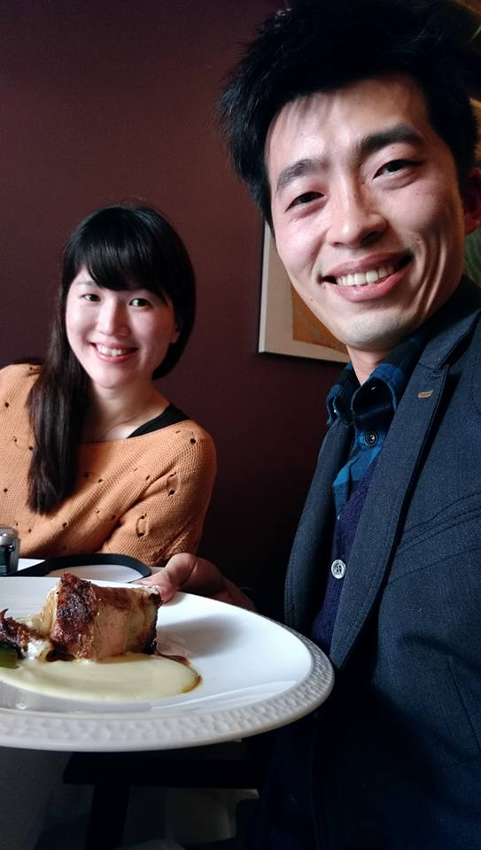

|
Doing is better than saying :)
| ||
|  Github Facebook Plurk Linked in Stack Overflow |
IntrodutionHi, welcome to Atlas' space. Hope to share you the new techinal product in our family and share new coding and design to improve your life. Please kindly let me know your thought and opinion. You can also contact me by email.ResumeA accomplished software engineer specializing on mobile functionality development and analysis on Android platform with seasoned experience to take charge of mobile phone developing life cycle.ExprienceSenior Engineer 2015 March - Now- Familiar with Android Telephony framework - Data connection relate customer SPEC and compliance matrix fulfill - CDMA phone feature implementation and design optimization (VZW, Sprint..) - World phone and dual phone design optimization - Join and discuss about RCS development in Android M release Senior Engineer Nov 2013 - 2015 March - Expertise with Android ConnectivityService module (traffic control for application and WAN connection) - Develop DSDS/DSDA dual SIM design solution before google release - Data Usage feature implementation for customer feature and maintenance - Maintain and debugging for Android VPN function Software Engineer & Senior Engineer Oct 2012 –Nov 2013 Android network feature development and performance optimization: - DNS problem trouble shooting and maintenance - Maintain Android Clat464 module (IPv4 application transfer in IPv6 only environment) - Participate for Tethering IPv6 design and debugging (non- Qualcom solution) - Network/ Socket problem debugging - Network module stability maintain Software Engineer Oct 2010 – Sep 2012 Android WiMAX function in Android: - Participate 1st hTC WiMAX phone and maintain all hTC WiMAX projects - Develop 1st Japan & 1st Korea WiMAX phone - Design and implement new WiMAX framework structure and feature (non-google native) function and communicate with firmware - Strong knowledge about WiMAX framework include native daemon/ API and firmware algorithm design - Android app develop for WiMAX debugging tool - Debugging & Testing for WiMAX throughput problem - Familiar with and complete WiMAX customer requirement ExpertiseLANGUAGE: C/C++, Java, Matlab, Android, iOS – Swift, HTML/CSS, JavaScript, GitOS: Windows, Linux, iOS KNOWLEDGE: Connectivity, Network relate module, RIL, dual SIM design EducationInstitute of Computer Science and Information EngineeringNational Taiwan University, Taipei, Taiwan, R.O.C., Master of Engineering Major: Computer Science and Information Engineering Aug. 2008 - Jul. 2010 Institute of Computer Science and Information Engineering National Tsing Hua University, Hsinchu, Taiwan, R.O.C., Bachelor of Engineering Major: Pure Mathematics Aug. 2003 - Jul. 2004 Major: Computer Science and Information Engineering Aug. 2004 - Jul. 2008 |
|
| Copyright reserved made @ 2016/04/02 | ||